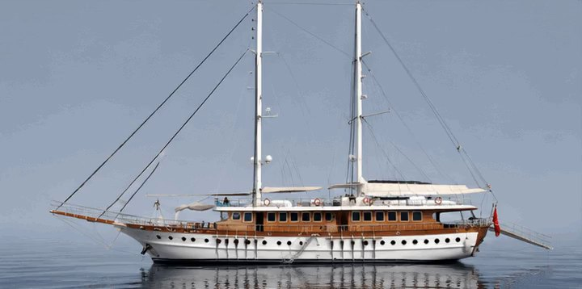
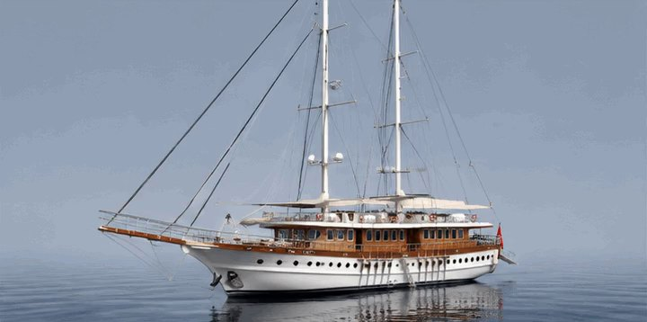
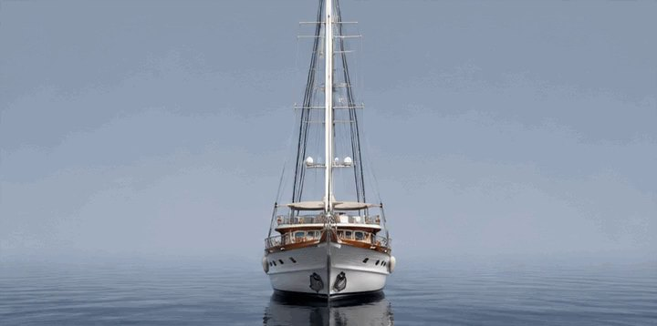
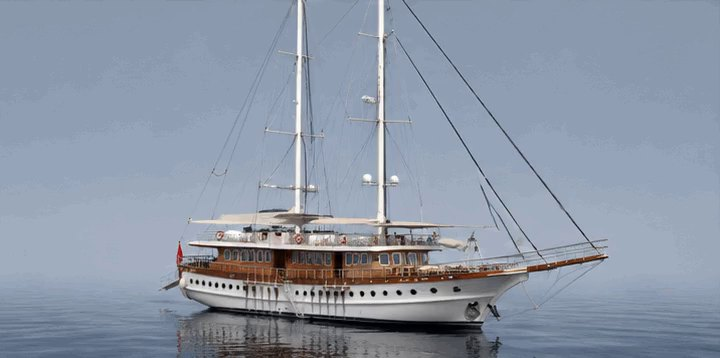
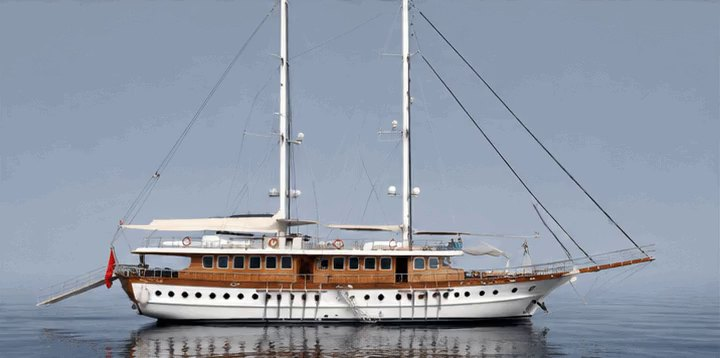
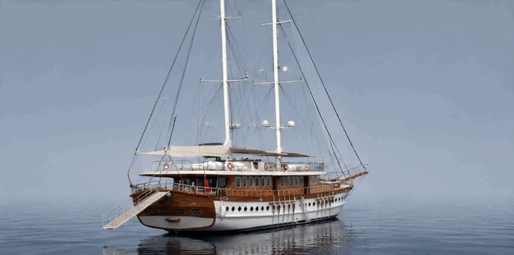

Maket hazırlanıyor…






Parmağınızla sağa sola çevirin
Yatpaketi · 360° görünüm
Queen Atlantis
Gulet35,5 m8 kabin16 misafirYapım 2014 · yenileme 2026
Sürükleyerek çevirin, iki parmakla ya da tekerlekle yakınlaştırın. İç yerleşimi görmek için alttan bir kat seçin.